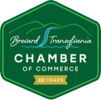
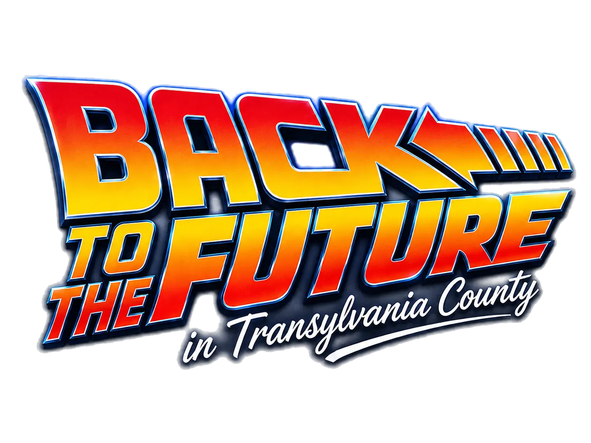
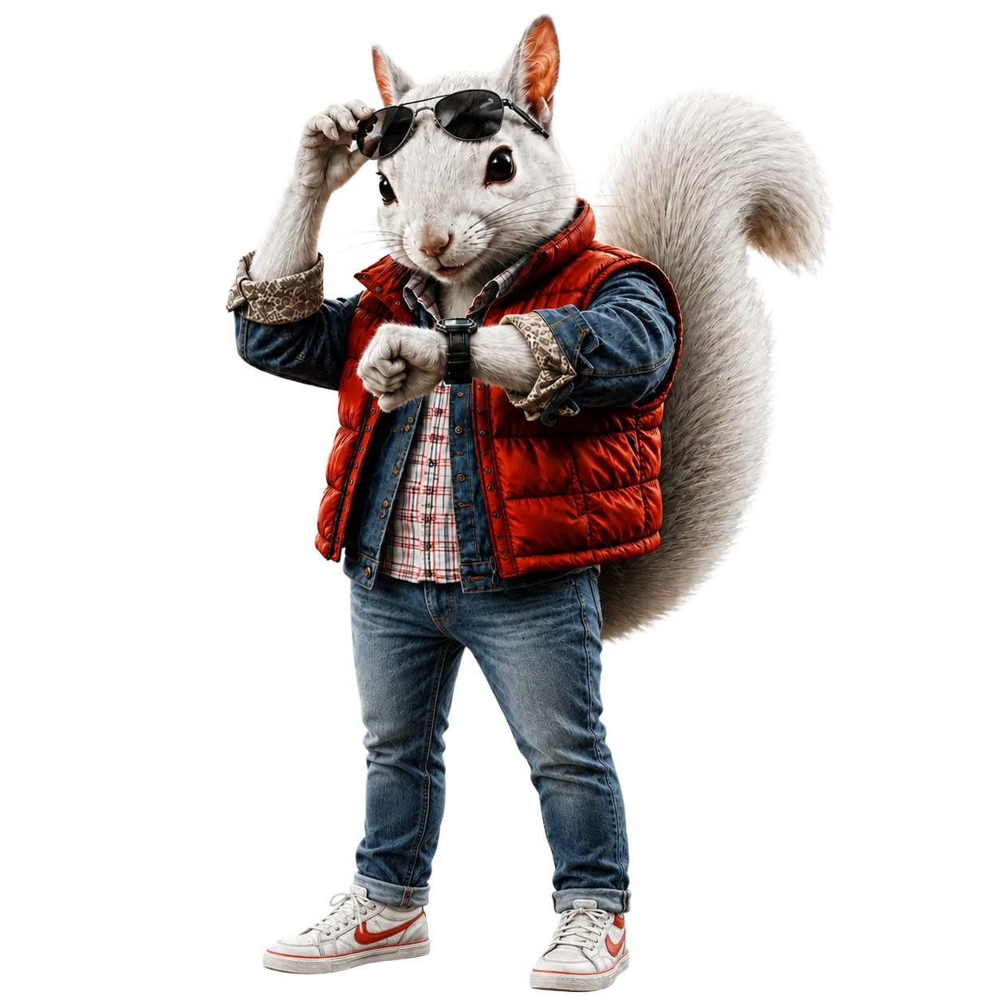

Theme direction
Back to the Future in Transylvania County, grounded in local legacy and future momentum.

2026 Chamber Gala & Awards
The Future Runs Local.
This theme uses 1980s time-travel energy to tell a Chamber story: honoring local legacy, celebrating the people and businesses moving Transylvania County forward now, and inviting the community to imagine what comes next.

Executive Summary
The page should make the conversation simple: approve the theme direction, protect the sponsor hierarchy, and move the system into final production.
Back to the Future in Transylvania County, grounded in local legacy and future momentum.
Five clear levels from Future Builder to Local Legend, with visible hierarchy preserved.
Mile Marker 88 plate pieces give $250 sponsors individual recognition instead of crowding.
Templates can extend into posters, stage loops, signage, social graphics, and sponsor assets.
The Big Idea
This is not just an 80s party. It is a local story told through a fun, cinematic time-travel frame.
Longtime businesses, civic institutions, tourism roots, arts, education, downtown life, and the community builders who brought Transylvania County here.
Chamber members, sponsors, nonprofits, civic partners, volunteers, and the annual gathering that brings local leadership into one room.
Economic vitality, small business support, workforce development, collaboration, resilience, tourism stewardship, and the leaders coming up next.
Celebrating local legacy. Powering what’s next.
Visual Direction
The web page keeps the theme readable and board-friendly while letting the mockups carry the neon, road, forest, and gala energy.
Winding road lines, deep tree silhouettes, and waterfalls keep the concept dark, cinematic, and rooted in Transylvania County.
Main Street and courthouse clock cues meet dashboard panels, speedometers, license plates, and sponsor plaques — local signage woven right into the identity.
Cyan, magenta, orange, red, and yellow accents add time-travel energy without becoming a club flyer.
The White Squirrel hosts the general event materials, never the Local Legend plates, while the Chamber patch works as a civic mark, travel decal, and official gala seal.
Poster System
The theme is not one poster doing everything. It works as a family of pieces, each with a clear job.
The hero movie-poster piece that sells the vibe with the White Squirrel character, forest setting, Brevard cues, and time-travel energy.
A sponsor recruitment piece that explains the tiers and benefits clearly before sponsorships are sold.
A thank-you poster used after sponsorships are sold. It preserves hierarchy and gives major sponsors strong visibility.
Individual recognition pieces for $250 Local Legend Sponsors. Sponsor logo and business name remain the hero.
Sponsor Hierarchy
The structure protects sponsor value by making each level feel intentional, readable, and visibly different.
Select any tier to see how that level is recognized.
Presenting sponsor with the largest recognition, largest logo placement, and premium visibility.
Premier sponsors with large secondary recognition and strong logo placement.
Major sponsors with medium recognition and a high-energy theme tie-in.
Supporting sponsors that help power the evening with smaller but still visible recognition.
Community sponsors recognized through individual license plate-style posters, not crowded into the main poster.
Local Legend Recognition
Local Legend Sponsors are moved out of the main sponsor poster and given individualized recognition pieces. Each $250 sponsor gets a landscape poster designed like a fictional early-1980s North Carolina specialty license plate for Transylvania County.
Event Night & Production
The same visual system covers the room on event night and turns into the practical pieces sponsor sales and staff need — no new design language required.
Theme logo, Chamber patch, and a “The Future Runs Local” backdrop, with the White Squirrel on hand to welcome guests.
The final sponsor poster system doubles as a polished thank-you display.
Local Legend plate posters installed as a route or wall series, with Mile Marker 88 signs and matching wayfinding details.
Sponsor posters, theme graphics, and a time-circuit display rotate all night, Friday, September 25, 2026.
Final hero art for print, web, and event promotion.
Clear tier pricing, benefits, and visual proof of the theme.
A polished hierarchy-based thank-you piece once sponsor commitments are in.
Individual $250 sponsor graphics for print and digital sharing, plus signage extensions for entry, tables, and wayfinding.
Sponsor Visibility Principles
The theme gives the Chamber a strong visual system, but sponsor readability stays first.
Executive Board Discussion
0 of 9 decision points confirmed
Two of these need a little more background. Venue details and the final event time are still being confirmed by staff — the ask tonight is to approve how we word that on the materials, not to choose a venue. And right now, Event Media Sponsors and Award Sponsors appear on the main final sponsor recognition poster; the open question is whether they stay there or get their own recognition pieces, the way Local Legend Sponsors do.